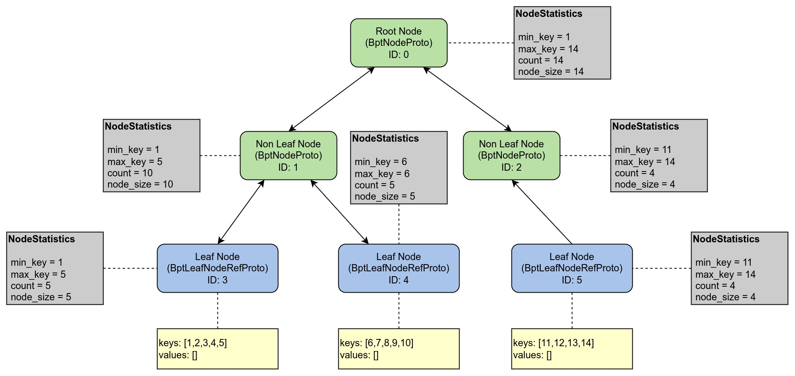

Ch05-AmDB 之 Index
December 5, 2022
AmDB 的 Index 实现的是聚簇索引，主要是为了避免最后加载进来的 B+ Tree 占用内存过高。而且 B+ Tree 底层基于 KV 存储实现，从 B+ Tree 中获取到 Key 再获取 Value 也并不是什么太难的事情。
1. 接口定义 #
class Index {
public:
Status Save();
Status GetRecords(std::vector<std::string>& keys, std::vector<std::string>* values);
Status Insert(chunk::Chunk* chunk);
Status Delete(chunk::Chunk* chunk);
private:
Bptree* bptree_;
TreeCtx* tree_ctx_;
}
Index 本质上还是对 BpTree 的封装，一个 Index 操作一个 BpTree。
2. BpTree #
2.1 接口定义 #
class Bptree {
public:
explicit Bptree(TreeCtx* tree_ctx, BptNode* root);
~Bptree() { root_ = nullptr; };
[[nodiscard]] Status Insert(std::string&& key, std::string&& value);
[[nodiscard]] Status Delete(const std::string& key);
[[nodiscard]] Status GetItem(const std::string& key, std::string* output) const;
private:
BptNode* root_{nullptr};
TreeCtx* tree_ctx_{nullptr};
};
2.2 原理实现 #
BpTree 全名 B+ Tree，AmDB 的 Index 借助 B+ Tree 实现。

对于每个节点都有一个 NodeStatistics 属性，其中存储了叶子节点的最大 key，最小 key，key 值个数，以及 kv 所占的字节数。
- 在插入的过程中，会记录这些统计信息，当某个叶子节点的大小大于 16KB 的时候便会开始分裂。
- 在查询的过程中，则会从根节点根据每个节点的统计信息依次查找，直到查找到叶子节点为止。
注意
- 这里留了个大坑，B+ Tree 的叶子节点应该是使用指针连接起来的，因为时间（懒）的原因，在实现的时候并未将其连接起来。所以现在应该算是像 B+ Tree 的多叉树。
- 查询的时候并不是所有的节点一次性被全部加载进来的，而是根据 NodeStatistics 信息按需加载节点，比如查找 key 为 3 的数据，那么会先后加载 ID 为 <0,1,3, 4> 的节点（这里之所以会把 4 号节点加载进来是因为 ID:1 与 ID:3 和 ID:4 的关系被序列化保存到一起了）。
3. TreeCtx #
3.1 接口定义 #
class TreeCtx {
public:
void CollectUnsavedTreeNode(BptNode* node);
void RemoveUnsavedTreeNode(BptNode* node);
void PullUnsavedTreeNode();
private:
std::unordered_map<uint64_t, BptNode*> unsaved_nodes_;
}
3.2 原理实现 #
TreeCtx 主要是为了避免对 BpTree 的反复遍历引入，比如 PullUnsavedTreeNode() 等函数会将修改过的 BpNode 拉到 Index 层面统一进行处理。也可以在遍历 BpTree 的时候，调用 CollectUnsavedTreeNode() 将修改过的节点暂时缓存到 TreeCtx 方便后续统一处理。